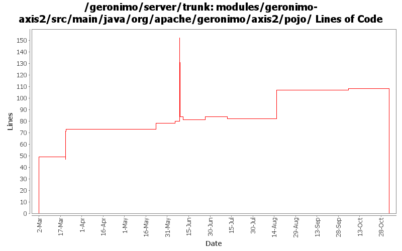

[root]/modules/geronimo-axis2/src/main/java/org/apache/geronimo/axis2/pojo

| Author | Changes | Lines of Code | Lines per Change |
|---|---|---|---|
| Totals | 39 (100.0%) | 412 (100.0%) | 10.5 |
| gawor | 22 (56.4%) | 295 (71.6%) | 13.4 |
| dims | 7 (17.9%) | 68 (16.5%) | 9.7 |
| jdillon | 3 (7.7%) | 47 (11.4%) | 15.6 |
| rickmcguire | 1 (2.6%) | 1 (0.2%) | 1.0 |
| akulshreshtha | 1 (2.6%) | 1 (0.2%) | 1.0 |
| prasad | 5 (12.8%) | 0 (0.0%) | 0.0 |
GERONIMO-3565. Modules distributed amongst framework/modules and plugins
0 lines of code changed in 5 files:
GERONIMO-2879 Change one more references to TM (j2eeType=JTAResource)
1 lines of code changed in 1 file:
got ridd of initContextRoot() method that wasn't thread safe (GERONIMO-3495)
32 lines of code changed in 2 files:
use the annotation Holder object for injections for POJO web services
42 lines of code changed in 2 files:
use the right property to get SERVLET_REQUEST
1 lines of code changed in 1 file:
install our own HandlerLifecycleManager
4 lines of code changed in 1 file:
GERONIMO-3246 Cleanup exception handling so stack traces for first failures are not discarded.
1 lines of code changed in 1 file:
minor update
0 lines of code changed in 1 file:
handler injection for ejb-based ws
4 lines of code changed in 1 file:
reworked handler processing
15 lines of code changed in 1 file:
reworked some instance managment
32 lines of code changed in 3 files:
set the service object property
7 lines of code changed in 1 file:
cleaned up the code a bit more
2 lines of code changed in 1 file:
getting service injection working right plus a bunch of other improvements
135 lines of code changed in 5 files:
initial ws support for ejb-based endpoints for axis2
7 lines of code changed in 2 files:
cleaned up the code a bit and made invocations work again
14 lines of code changed in 1 file:
Get failing test to work. When trying to load HandlerChainsType, we have to use HandlerChainsDocument's Factory to parse the xml
3 lines of code changed in 1 file:
Add/update headers
47 lines of code changed in 3 files:
remove jaxb generated code, use the xmlbeans code generated from the j2ee 5 schema instead
16 lines of code changed in 3 files:
Fix for GERONIMO-2913 - minor changes to JettyEJBWebServiceContext and TomcatEJBWebServiceContext for Axis2
Fix for GERONIMO-2914 - Axis2: a few changes to set the servicepath, contextroot correctly in EJB to allow getWSDL() test working correctly
Fix for GERONIMO-2894 - Restructure geronimo-axis2 code to split between EJB and POJO containers
Thanks a ton Lin.
49 lines of code changed in 3 files: